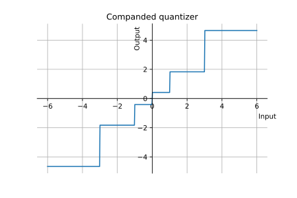

Quantization
Vicente González Ruiz
January 25, 2020
|
| (2) |
being the the
quantized signal and
the quantization error.
- Depending on the number of
different possible values (or bins) for ,
we speak of a -bits
quantizer (this means that the output of the quantizer are
bits for each sample, or that we have
representation levels).
2 Uniform (lineal) quantization
- All quantizers are defined from their set of
(decision levels) and
(representation levels). In a linear quantizer, the quantization step
satisfies that
|
| (3) |
Notice that, for a given dynamic range of
,
is inversely
proportional to ,
and viceversa.
- In uniform quantizers,
does not depends on the PAM sample values.
Notice that in this quantizer, .
This is a -bits
quantizer .
- Uniform quantizers are used in most A/D (analogic/digital) converters, were
it is expected the generation of uniformely distributed sequences of
samples.
2.1 Example (uniform quantization)
IPython notebook
3 Quantization + Encoding
- When we quantize digital signals, these are sequences of digital samples
represented by symbols of a given alphabet, typically, a subset of
or .
Therefore, both the input and the output of the quantizer are indexes, not
real values of a sampled signal.
- Therefore, in this context,
represents the length of the intervals of indexes what will be ignored.
3.1 Example
Quantize Jfk_berlin_address_high.ogg using
.
Compute the variance of both audio sequences.
4 Non-uniform quantization
- In order to minimize the maximun, average or the total quantization error,
can be adapted to the characteristics of .
4.1 Companded quantization
- Non-uniform quantizer.
- Companding: COMpressing + exPANDING. The original signal is mapped
through a compressor, quantized using an uniform quantized, and
re-mapped using the corresponding expander. The result is a logarithmic
quantization.
- -law
example:
Ipython notebook

5 PDF-optimized quantization
- Non-uniform quantizer.
- if we known the probability distribution of the samples, we can select a
small
for the most probable samples and viceversa.
6 Adaptive quantization
- Useful when the characteristics of
(the variance, for example) vary over time.
- Typically, the quantizer varies
depending on such characteristics.
7 Forward adaptive quantization
- Used for determining a suitable
for blocks of samples.
-
7.0.1 Encoder:
- While samples in :
- Read into
the next
samples of .
- Determine ,
minimizing the quantization error, and output
(or the data necessary for its determination).
- Quantize
and output it.
-
7.0.2 Decoder:
- While data in input:
- Read
(or the data necessary for determining it, and in this case, use
the same algorithm that the used by the encoder).
- “Dequantize”
and output it (note that the dequantization is only a way of
calling the process of reverting the original range of the quantized
signal).
- The selection of
is a trade-off between the increase in side information needed by small block
sizes and the loss of fidelity due to large block sizes.
- Forward adaptive quantization generates a
delay (buffering),
where is the
sampling rate of .
8 Backward adaptive quantization
- Only the previously quantized samples are available to use in adapting the
quantizer.
- Idea: If happens that
is smaller than it should be, the input will fall in the outer levels of the
quantizer a high number of times. On the other hand, if
is larger than it should be, the samples will fall in the inner levels a high
number of times.
-
8.0.1 Encoder:
- .
- While
is not exhausted:
- Quantize the next sample.
- Observe the output and refine .
-
8.0.2 Decoder:
- .
- While
is not exhausted:
- “Dequantize” the next sample.
- Step 2.B of the encoder.
9 The Jayant quantizer [1]
- Adaptive quantization with a one word memory ().
- A Jayant quantider defines the Step 2.B. as: Define a multiplier
for each quantization level ,
where for the inner levels
and for the outer levels ,
and compute:
where
was the previous quantization step and
the level multiplier for the -th
(previous) sample. Thus, if the previous ()
quantization used a
too small (using outer quantization levels) then
will be larger and viceversa.
- Depending on the multipliers ,
the quantizer will converge or oscillate. In the first case, the quantizer will
be good for small variations of
but bad when a fast adaption to large changes in
is required. In the second one, the quantizer will adapt quickly to fast
variations of
but will oscillate when
changles slowly.
- Most Jayant quantizers clip the computation of
to avoid generating a zero output quantizer in those contexts where
is zero or very close to zero, and to improve the adaptation to smaller
samples after a sequence of bigger ones (avoiding to grow without limit):
10 Adapting with a scale factor
- A Jayant quantized adapts the quantization step to the dynamic range
of the signa using a set of multipiers. A similar effect can be provided by
dividing the input signal by a scale factor defined iteratively as:
|
| (4) |
10.1 Example
Quantize Jfk_berlin_address_high.ogg using
-bits
backward adaptive Jayant quantizer. Reproduce the quantized sequence and provide
a subjective comparison with the original sequence.
References